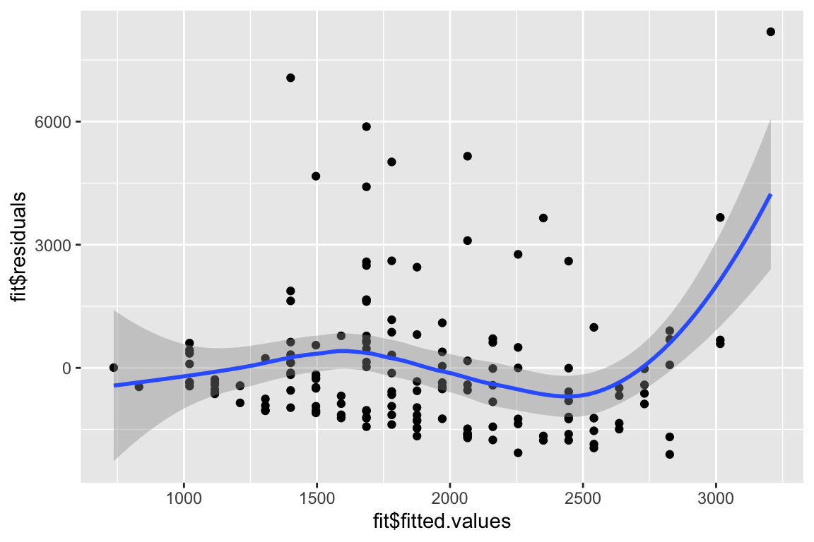

Chapter 8 A linear model with a single, continuous X
8.1 A linear model with a single, continuous X is classical “regression”
To introduce modeling with a single continuous \(X\) variable, I’ll use data from
- Source: Dryad Digital Repository. https://doi.org/10.5061/dryad.b3h4q
- File: “FCM data dryad.csv”
The data are from (???), who showed that North American red squirrel (Tamiasciurus hudsonicus) mothers from Yukon, Alaska produce faster growing pups in years with increased squirrel density. Remarkably, they even showed that perceived (but not actual) density results in faster growing pups. To begin to investigate how pregnant mothers control the future growth rate of pups, the researchers measured the relationship between local squirrel density and the amount of fecal cortisol metabolites from pregnant mothers. Cortisol is a hormone that is secreted as part of stress response. The researchers were interested in cortisol because it had previously been shownt that, in mammals, blood cortisol levels in pregnant mothers have numerous effects on offspring long past birth. If increased squirrel density causes increased blood cortisol levels then we would expect to find a positive relationship between \(Density\) and
Figure 8.1: A scatterplot of Fecal cortisol matabolites and squirrel density.
Figure 8.1 is a scatterplot of the data with the amount of cortisol metabolites in the feces on the \(Y\) axis and local squirrel density on the \(X\) axis. The line through the data is a graphical representation of a linear model fit to the data and the gray cloud around the line is a graphical representation of the uncertainty in the model. The researchers wanted to model the “effect” of squirrel density on the amount of cortisol metabolites in the feces of the pregnant mothers. Graphically, this effect is the slope of the line in Figure 8.1.
The model fit to the data is
\[\begin{equation} FCM_i = \beta_0 + \beta_1 Density_i + \varepsilon_i \tag{8.1} \end{equation}\]which contains both the linear predictor and the error. For inference, for example, computing standard errors of the coefficients, We need to model the error. Here, we use the simplest model of error which is “IID \(N(0, \sigma)\)”. This means, the modeled error is
- Independent – individual error values are independent of other values.
- Identical – individual error can be thought of as a sample from a single random distribution (the same for each individual value). For this model, this distribution is
- \(N(0, \sigma)\) – the modeled distribution is “Normal” or “Gaussian”, with a mean of zero and a standard deviation of \(\sigma\).
The predictor part of the model is
\[\begin{equation} \textrm{E}[FCM|Density] = \beta_0 + \beta_1 Density \tag{8.2} \end{equation}\]In words, model (8.2) reads “the expected value of \(FCM\) conditional on density is beta-knot plus beta-one times density”. An expected value is a long run average – if we were to sample lots and lots of red squirrel populations with \(Density=x\) (where \(x\) is a specific value), we’d expect the average \(FCM\) across these samples to be \(\beta_0 + \beta_1 x\).
Let’s unpack this. \(\textrm{E}[Y]\) is the expectation or expected value of \(Y\). An expection is the long-run average of \(Y\) if we were to run an experiment or re-sample a population many times. The sample mean of \(Y\) is an estimate of \(\textrm{E}[Y]\). \(\textrm{E}[Y|X]\) is a conditional expectation of \(Y\) – it is the expectation given additional conditions. Using the red squirrel example, these conditions are a specific value of \(Density\). If \(FCM\) is linearly related to \(Density\) (the right-hand side of equation (8.2)) then the expected value of \(FCM\) given a local density of 2.8 squirrels differs from the expected value of \(FCM\) given a local density of 1.4 squirrels (the units of \(Density\) are squirrels per 150 meter radius of the individual female’s midden).
In model (8.2), there is a single \(X\) variable (\(FCM\)). While the \(X\) variables are often called the “dependent” variables, in this model \(FCM\) does not “depend” on the independent variable \(Density\) in any causal sense – meaning if I were to intervene and set \(Density\) to some value \(x\), I would expect \(FCM\) to equal \(\beta_0 + \beta_1 x\). Rather, \(FCM\) only “depends” on \(Density\) in a probablistic sense – if \(Density = x\) then the most probable value of \(FCM\) is \(\beta_0 + \beta_1 x\). With some strong assumptions model (8.2) can be turned into a model of causal dependency, which is the focus of chapter xxx.
\(\beta_0\) and \(\beta_1\) are the parameters of model (8.2). Specifically \(\beta_0\) is the model intercept and \(\beta_1\) is the modeled effect of \(Density\). Again, the effect (\(\beta_1\)) has a probabilistic, and not causal, interpretation. This interpretation is
\[\begin{equation} \beta_1 = \textrm{E}[FCM|Density=x+1] - \textrm{E}[FCM|Density=x] \tag{8.3} \end{equation}\]Or, in words, “beta-1 is the expected value of FCM when density equals x + 1 minus the expected value of FCM when the density equals x.” \(\beta_1\) is simply the difference in expected values given a one unit difference in \(Density\). A very short way to state this is “\(\beta_1\) is a difference in conditional means”.
8.1.1 Using a linear model to estimate explanatory effects
The goal of the statistical model here is to estimate \(\beta_1\) – the probabalistic effect of \(Density\) on \(FCM\). This estimate, and a measure of the uncertainty of this estimate, are in the table of coefficients of the fit model
| Estimate | Std. Error | t value | Pr(>|t|) | |
|---|---|---|---|---|
| (Intercept) | 736.0 | 331.9 | 2.2 | 0.0281 |
| Density | 671.1 | 178.9 | 3.8 | 0.0002 |
where the entries in the column “Estimate” are estimates of the parameters \(\beta_0\) and \(\beta_1\) in model (8.2). The entries in the column “Std. Error” are the standard errors (SE) of the estimates, which are measures of the uncertainty of the estimates.
The parameter estimates in the table above are the coefficients of the fitted model
\[\begin{equation} FCM_i = b_0 + b_1 Density_i + e_i \tag{8.4} \end{equation}\]where the subscript i refers to the ith individual. The coefficients \(b_0\) and \(b_1\) are the y-intercept and the slope of the line in Figure 8.1. The coefficient for \(Density\) (\(b_1\)) is 671.1, and (given the definition of the parameter \(\beta_1\) in equation (8.3)) we expect squirrel mothers with a local density of 2 squirrels within a 150 m radius of her midden to average 671.1 more units of FCM (ng of fecal cortical metabolites per gram dry food) than mother squirrels with a local density of only 1 squirrel within a 150 m radius of her midden.
8.1.1.1 Probabilistic vs. causal conditioning
Remember that this coefficient is estimating a probabilistic parameter. Consequently, the coefficient \(b_1\) is simply a descriptor of a pattern of relationship between local density and fecal cortisol metabolites - no causal effect is implied. With the strong assumptions explained in chapter xxx, however, \(b_1\) can estimate a causal effect.
8.1.2 Using a linear model for prediction
Model (8.4) gives the measured value of FCM for each squirrel. The equation includes the linear predictor (\(b_0 + b_1 Density_i\)) and the residual from the predictor (\(e_i\)). The predictor part is called “predictor” because it is the equation for predicting the value of an individual’s \(FCM\) given that individual’s value of \(Density\):
\[\begin{equation} \widehat{FCM} = b_0 + b_1 Density \tag{8.5} \end{equation}\]where \(\widehat{FCM}\) is read as “FCM hat” and is the predicted value or simply “prediction”. Very often, we use the predictor part (equation (8.5)) to predict unknown or future values given different modeled inputs (the \(X\)).
8.1.3 Reporting results
The authors of the squirrel fcm data published a figure and table similar to fig. xxx and table above but used a slightly more complex linear model. Here is how the author’s reported the results:
Across 6 years (2006 to 2011), we found a positive relationship between local density and concentrations of fecal cortisol metabolites [FCM; t\(_155\) = 3.63, P = 0.0002 (table S4 and Fig. 3A)].
I would advocate reporting the estimate and a confidence interval instead of \(t\) and \(p\). For example “Across 6 years (2006 to 2011), the probabilistic effect of local density on fecal cortisol metabolites is 671.1 (95% CI: 317.7, 1024.5). If a \(p\)-value is report in addition to the effect and CI, always report the exact p-value, which emphasizes the continuous nature of evidence against the null, and not something like”\(p < 0.05\)“, which artificially dichotomizes the evidence against the null.
8.2 Working in R
8.2.1 Exploring the bivariate relationship between Y and X
Questions
- Import the “FCM data dryad.csv” data from the Dryad repository as the data.table
fcm - How are different words in the column labels demarcated? Is this good practice?
Here we want to fit a model of FCM.ng.g.dry as a function of Raw.Squirrel.Density. The authors used prior knowledge to expect a positive relationship between these two variables. Use qplot to generate a scatterplot of \(FCM\) against \(Density\)
Questions
- Is there a trend? If so, does the trend look linear or non-linear?
- Does the residual variation (the deviation from the trend on the \(Y\) axis) look homogenous along the \(X\)-axis?
- Are there any obvious outliers?
8.2.2 Fitting the linear model
We will fit a linear model to the data using the lm function, which is very general and will be our workhorse throughout the class. The minimal input to the function is a model formula and the name of the data.frame (remember, a data.table is a data.frame). A formula is of the form Y ~ X. All of the output we assign to the object fit.
Let’s fit the linear model to the data using density as the predictor
fit <- lm(FCM.ng.g.dry ~ Raw.Squirrel.Density, data=fcm)R will look for the specified \(Y\) and \(X\) variables in the column names of fcm. If these are not found, R will return an error, for example
fit <- lm(FCM_ng_g_dry ~ Raw_Squirrel_Density, data=fcm)will return the error “Error in eval(predvars, data, env) : object ‘FCM_ng_g_dry’ not found”. This means your spelling and capitalization have to be exact!
8.2.3 Getting to know the linear model: the summary function
The lm function returns an lm object, which we’ve assigned to the name fit. fit contains lots of information about our fit of the linear model to the data. Most of the information that we want for most purposes can be retrieved with the summary function, which is a general-purpose R command the works with many R objects.
summary(fit)##
## Call:
## lm(formula = FCM.ng.g.dry ~ Raw.Squirrel.Density, data = fcm)
##
## Residuals:
## Min 1Q Median 3Q Max
## -2107.5 -1108.3 -434.9 511.8 8186.8
##
## Coefficients:
## Estimate Std. Error t value Pr(>|t|)
## (Intercept) 736.0 331.9 2.217 0.028078 *
## Raw.Squirrel.Density 671.1 178.9 3.752 0.000248 ***
## ---
## Signif. codes: 0 '***' 0.001 '**' 0.01 '*' 0.05 '.' 0.1 ' ' 1
##
## Residual standard error: 1732 on 154 degrees of freedom
## (7 observations deleted due to missingness)
## Multiple R-squared: 0.08374, Adjusted R-squared: 0.07779
## F-statistic: 14.07 on 1 and 154 DF, p-value: 0.0002484What is here:
Call. This is the model that was fit
Residuals. This is a summary of the distribution of the residuals. From this one can get a sense of the distribution (for inference, the model assumes a normal distribution with mean zero). More useful ways to examine this distribution will be introduced later in this chapter.
Coefficients table. This contains the linear model coefficients and their standard error and associated \(t\) and \(p\) values.
- The column of values under “Estimate” are the coefficients of the fitted model (equation (8.4)). Here, 735.9604344 is the intercept (\(b_0\)) and 671.1379749 is the effect of \(Density\) (\(b_1\)).
- The column of values under “Std. Error” are the standard errors of the coefficients.
- The column of values under “t value” are the t-statistics for each coefficient. A \(t\)-value is a signal to noise ratio. The coefficient \(b_1\) is the “signal” and the SE is the noise. Get used to thinking about this ratio. Any \(t\) less than 2 is indicative of too much noise to say much about the signal. A \(t\) between 2 and 3 means the noise is large enough to suggest an effect. A \(t\) greater than 3 is pretty good evidence of an effect.
- The column of values under “Pr(>|t|)” is the \(p\)-value, which is the exact probability associated with a particular \(t\). What is the \(p\)-value a test of? The \(p\)-value tests the hypothesis ``how probable are the data if the coefficient is zero?’’. Formally \(P = \mathrm{freq(t' \ge t|H_o)}\), where \(t'\) is the hypothetical t-value, t is the observed \(t\)-value, and \(H_o\) is the null hypothesis. We will return to \(p\)-values in Chapter xxx.
Signif. codes. I am surprised that base R returns this. These are useless because the concept of “levels of significance” is muddled, as will be discussed in Chapter xxx.
Beneath the Signif. codes are some model statistics which are useful
Residual standard error This is \(\sqrt{\sum{e_i^2}/(n-2)}\), where \(e_i\) are the residuals in the fitted model. “degrees of freedom” is the number of \(e_i\) that are “allowed to vary” after fitting the parameters, so is the total sample size (\(n\)) minus the number of parameters fit. The fit model has two fit parameters (\(b_0\) and \(b_1\) so the df is \(n-2\). Note that this is the denominator in the residual standard error equation.
Multiple R-squared. This is an important but imperfect summary measure of the whole model that effectively measures how much of the total variance in the response variable “is explained by” the model. Its value lies between zero and 1. It’s a good measure to report in a manuscript.
F-statistic and p-value. These are statistics for the whole model (not the individual coefficients) and I just don’t find these very useful.
Note that the \(p\)-value for the coefficient for Raw.Squirrel.Density is very small and we could conclude that the data are not consistant with a model of no slope. But did we need a formal hypothesis test for this? We haven’t learned much if we have only learned that the slope is “not likely to be exactly zero”. What we want to know is not if there is a relationship between \(FCM\) and \(Density\), which is imperfectly answered with a \(p\)-value, but the sign and magnitude of the relationship and the uncertainty in this estimate. For this, we don’t need the \(p\)-value. Instead, we want to interpret the coefficient to its SE directly (for a quick-and-dirty interpretation) or the confidence interval of the effect (for a more formal interpretation). Please read this paragraph again. We will come back to it over and over.
8.2.4 display: An alternative to summary
Much of what we want to know about a model fit is returned by the display function from the arm package.
display(fit)## lm(formula = FCM.ng.g.dry ~ Raw.Squirrel.Density, data = fcm)
## coef.est coef.se
## (Intercept) 735.96 331.94
## Raw.Squirrel.Density 671.14 178.90
## ---
## n = 156, k = 2
## residual sd = 1732.02, R-Squared = 0.08The display function does not give a \(t\)-value or a \(p\)-value of the coefficients because the authors of the arm package do not think \(p\)-values are very valuable. We don’t need a \(t\) because one can mentally compute the approximate ratio of the coefficient to its SE and get a sense of the signal to noise, and that’s all the authors of the display function think we need.
8.2.5 Confidence intervals
Confidence intervals for the coefficients of the model are obtained by
confint(fit)## 2.5 % 97.5 %
## (Intercept) 80.21785 1391.703
## Raw.Squirrel.Density 317.73057 1024.545confint returns by default the 95% confidence interval (CI) of all parameters. The most useful way of thinking about the meaning of a CI is
A confidence interval contains the range of parameter values that are consistent with the data, in the sense that a \(t\)-test would not reject the null hypothesis of a difference between the estimate and any value within the interval
A more textbook way of defining a CI is: A 95% CI of a parameter has a 95% probability of including the true value of the parameter. It does not mean that there is a 95% probability that the true value lies in the interval. This is a subtle but important difference. Here is a way of thinking about the proper meaning of the textbook definition: we don’t know the true value of \(\beta_1\) but we can 1) repeat the experiment or sampling, 2) re-estimate \(\beta_1\), and 3) re-compute a 95% CI. If we do 1-3 many times, 95% of the CIs will include \(\beta_1\) within the interval.
Confidence intervals are often interpreted like \(p\)-values. That is, the researcher looks to see if the CI overlaps with zero and if it does, concludes there is “no effect”. First, this conclusion is not correct – the inability to find sufficient evidence for an effect does not mean there is no effect, it simply means there is insufficient evidence to conclude there is an effect!
Second, what we want to use the CI for is to guide us about how big or small the effect might reasonably be, given the data. Again, A CI is a measure of parameter values that are “consistent” with the data. If our biological interpretations at the small-end and at the big-end of the interval’s range radically differ, then we don’t have enough precision in our analysis to reach an unambiguous conclusion. Remember this.
8.2.6 How good is our model?
How well does variation in \(Density\) “explain” variation in \(FCM\)? The answer to this is in the \(R^2\) value, which is given in display(fit) and in summary(fit) and accessed directly with
summary(fit)$r.squared## [1] 0.08373756\(R^2\) is the fraction of the total variance of \(Y\) explained by the model, or more specifically, the linear predictor. It will vary from zero (the model explains nothing) to one (the model explains everything). If \(R^2=0\) the response is completely unpredictable by the predictors. We can think of the values of the response as white noise or all error. This doesn’t mean that the values are “not caused” or “random” or not predicted by some other variable. It only means the values are random with respect to the \(X\) variable(s) in the model. If \(R^2=1\) we can exactly predict the response from the \(X\) variables in the model. So the bigger the \(R^2\), the better the model in the sense that the response is more predicatable. Super importantly, “explains” is in a probabilistic and not causal sense. We will explore this concept much more in future worksheets.
plot is a very useful base R function for “model checking” or “model diagnostics” to see if our model fit is acceptable.
plot(fit)Compare the four diagnostic plots using the guidelines from here http://data.library.virginia.edu/diagnostic-plots/
Questions
- Look at the plots you just made. What is a residual? What is a fitted value?
8.2.7 exploring a lm object
fit contains much information but simply typing fit into the console gives us only the model and the coefficients. names is a super important R function. It gives us the names of all the parts of some R object. fit is an lm object. names(fit) gives us all the parts contained in an lm object.
names(fit)## [1] "coefficients" "residuals" "effects" "rank"
## [5] "fitted.values" "assign" "qr" "df.residual"
## [9] "na.action" "xlevels" "call" "terms"
## [13] "model"You can see any of these parts using the dollar sign
Questions
What does
fit$residualsreturn? Answer using equation (8.4)What does
fit$fitted.valuesreturn? Answer using equation @ref(eq:fcmi
You can use qplot to make a plot similar to the first plot of plot(fit)
qplot(fit$fitted.values, fit$residuals, geom=c('point', 'smooth'))## `geom_smooth()` using method = 'loess' and formula 'y ~ x'
8.3 Problems
- Using the chick data from Chapter 3. Compare the effects of nest_temperature_above_ambient on day13_mass by fitting two separate linear models 1) one using only the control group and one using the treated group. The grouping variable is playback_treatment. These models were plotted in Chapter 3 so
lmwill return the linear model behind these plots.
Report the results using the two effect estimates and a 95% confidence interval (we will learn in a later chapter a more sophisticated way of comparing the effects between the groups)
file name: “allDatasetsMarietteBuchanan2016.xls”
source: https://datadryad.org//handle/10255/dryad.122315
- (Grad students only) – find a dataset using Dryad that has data that can be fit by a simple linear model with a single continuous \(X\) (its okay if the authors fit the data with a more complex model). Fit the data and report the results with a plot and text.